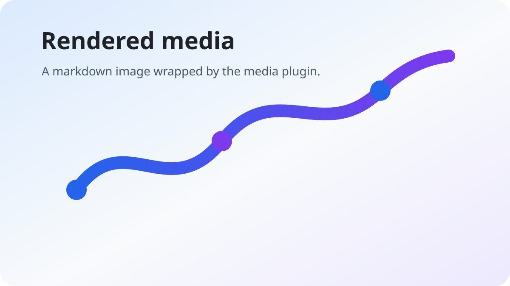
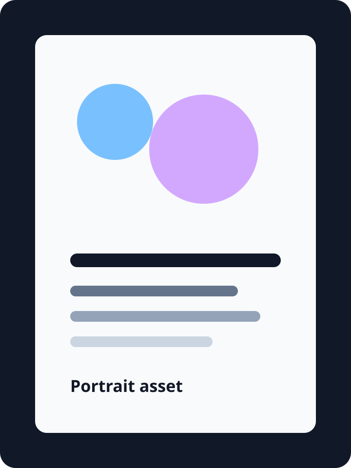

Nizel Style Preview
This page previews the scoped Nizel content styles, core markdown elements, and the first-party plugin classes that can be loaded as one stylesheet or as separate plugin CSS files.
The preview is written as Markdown and rendered through Nizel with official plugins enabled. It intentionally mixes short notes, long paragraphs, adjacent plugin blocks, nested structures, and dense metadata so spacing rules can be judged against realistic output.
Core Content
Text supports strong emphasis, inline emphasis, links, inlineCode(), CSS abbreviations, 🚀 emoji, highlighted text, H2O, x2, inline math E = mc^2, and citation links [style]. It also needs enough line length to show rhythm, wrapping, and inline controls without collapsing the hierarchy.
Heading Rhythm
Subsections should have more space above them than ordinary paragraphs, while still feeling like they belong to the same document. This is especially important once plugin blocks appear between headings.
Small Heading
Small headings should not look like oversized cards or detached labels.
Compact Heading
Compact headings often appear in reference pages and changelogs.
Eyebrow Heading
Uppercase headings should stay quiet and readable.
Lists
-
Unordered lists use the Nizel marker treatment.
-
Spacing is based on the named
emscale. -
Longer list items can wrap across multiple lines without the marker drifting away from the first line of content.
- Ordered lists keep browser numbering.
- Nested content stays within the scoped root.
- Additional items help show vertical list rhythm.
Content previews should feel close to application output instead of a marketing page.
import 'nizel-style/base.css';
import 'nizel-style/plugins/alert.css';
| Token | Purpose | Default |
|---|---|---|
--nizel-foreground | Readable content text. | Theme-aware foreground. |
--nizel-space-l | Default block flow spacing. | 1.35em |
--nizel-font-code | Inline and block code font. | System monospace stack. |


Plugin Blocks
Note
Alerts use semantic color variables such as --nizel-info and --nizel-error.
Tip
Tip blocks should be visually distinct without becoming heavier than the surrounding content.
Important
Important blocks use the secondary color family.
Warning
Warning blocks need enough contrast in both themes.
Caution
This is the error-toned alert variant.
Disclosure And Navigation
Details block
Disclosure content uses the same spacing and surface tokens as the rest of the style package.
Collapsed-looking details content
The details plugin renders native disclosure markup. This second block verifies consecutive details spacing.
Code And Computed Blocks
const html = await useNizel({ plugins })(markdown);
export const render = async () => {
return await nizel(markdown);
};
Metadata
- title
- Nizel Style Preview
- status
- Draft
- plugins
- alert, details, toc, code-copy, math, media
- Definition Term
- Definition lists should retain a compact relationship between terms and descriptions.
- Another Term
- Multiple entries should not collapse into a dense block.
References
Reference sections often close a document. They should be quieter than body content but still legible in both themes.2
- Nizel Style package preview citation.
- Runtime integration reference for plugin-bound CSS.